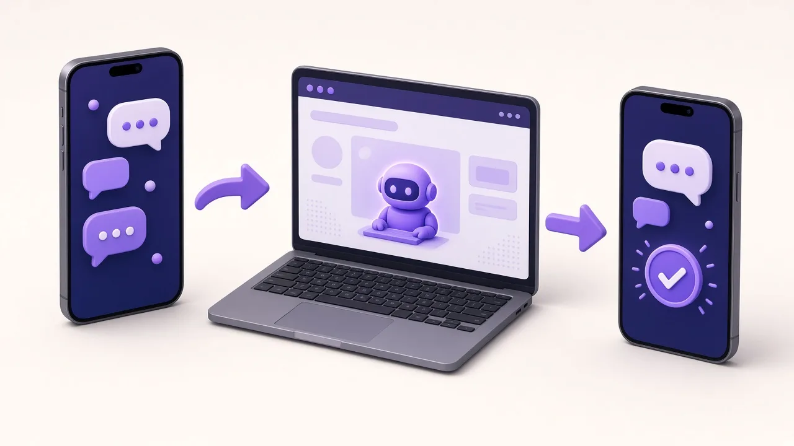

For most screen-based office work, an AI agent is now a real alternative to hiring. A new employee spends the day in a browser and reports to you on WhatsApp. An AI agent does the same: it works in a real browser, takes your instructions on WhatsApp and reports back in real time, without training, notice periods or turnover.
I run Clara AI, a team of 14 that has worked with 19 clients across India and the Gulf. Over the last year I have watched one pattern repeat: owners want work done, not more people to manage. For non-physical work, I believe companies will come to AI agencies instead of hiring. Here is why, in plain words.
Look at what a typical sales or marketing executive does all day. They open a browser. They search LinkedIn for the right people, send invites and follow up. They update a sheet. They write a blog post and publish it. Then, at the end of the day, they send the manager a WhatsApp message: "Done, here is what happened."
That is most office work: browser work plus a report to the manager. The tools change, but the shape stays the same. And that shape is exactly what software can now do.
The salary is only the visible part. The hidden cost is your time.
For a founder or a small business owner without a big HR team, this cycle eats the hours that should go into selling and serving clients.
A browser AI agent is not a chatbot that answers questions. It is a worker that does tasks. It logs into the same websites your employee would, inside a real browser, and clicks, types and reads like a person.
You manage it the way you manage your team today: on WhatsApp. You send an instruction, it gets to work, and it reports back in real time. It talks in any language, and it accepts voice notes in English for now. So you can say "Focus on real estate developers in Pune this week" while driving, and the agent changes course.

Our AI LinkedIn Outreach Agent does the job of an outreach executive. It finds the right people for your offer, sends connection invites and personal messages, follows up on time, and tells you on WhatsApp when someone replies. You only step in when a conversation is warm.
Two real examples. For a surfaces and interiors brand, the agent reached 345 people; 107 accepted, a 31% acceptance rate, and 14 replied. For a business coach, it sent 149 invites, made 43 connections, started 12 conversations and found 3 warm leads.
Our AI SEO Agent does the job of a content and SEO executive. It picks topics people are searching for, writes the blog post, publishes it every day, and tracks which pages bring traffic. The blog you are reading is run this way, with a person approving the plan.
| Factor | Hiring a person | Using an AI agent |
|---|---|---|
| Setup | Job post, interviews, notice period | First demo within a week of your material |
| Training | Weeks of explaining | Your instructions, written once |
| Working hours | Office hours, leave, holidays | Works whenever you need it |
| Reporting | When you ask for it | Real time on WhatsApp |
| Scaling | Hire again | Add more work to the same agent |
| Languages | The languages that person speaks | Any language in text, English voice notes |
Want to see an agent do this on your own accounts? Book a free demo.
An agent is a worker, not the boss. In every setup we build, people keep three things:
Not everything should move to agents. Physical work, like site visits, deliveries and on-ground service, needs people. So do relationships: a long-term client wants to talk to a human. And judgment calls, such as pricing a big deal or handling an unhappy customer, should stay with you. The goal is not to remove people. It is to stop paying people to do repetitive browser work so they can do the work only they can do.
Ask yourself three simple questions before your next hire.
If you answered yes to all three, try an agent before you post a job. If the work needs a handshake, a site visit or a hard negotiation, hire a person, and let the agent feed that person warm leads instead.
A good way to start is small. Pick one job, such as reaching your ideal buyers on LinkedIn or publishing one useful blog post a day. Let the agent run it for a few weeks while you watch the WhatsApp reports. You will see quickly whether the work gets done, and you will not have spent months hiring and training to find out. Many owners we speak to start with one agent and then add the second once the first is bringing in conversations.
We keep it simple. You tell us the job, your customers and your offer. Clara AI delivers a first demo within 7 days of receiving your material. Then we deploy the agent on your accounts, connect it to your WhatsApp, and manage it for you every day. If you want something beyond outreach and SEO, we also build custom AI agents for other office tasks, such as email support for ecommerce.
My honest view: in a few years, hiring a person to sit in a browser all day will feel like hiring someone to type letters. The work will still happen. It will just be done by agents that report to you on WhatsApp.